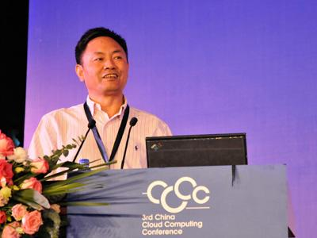
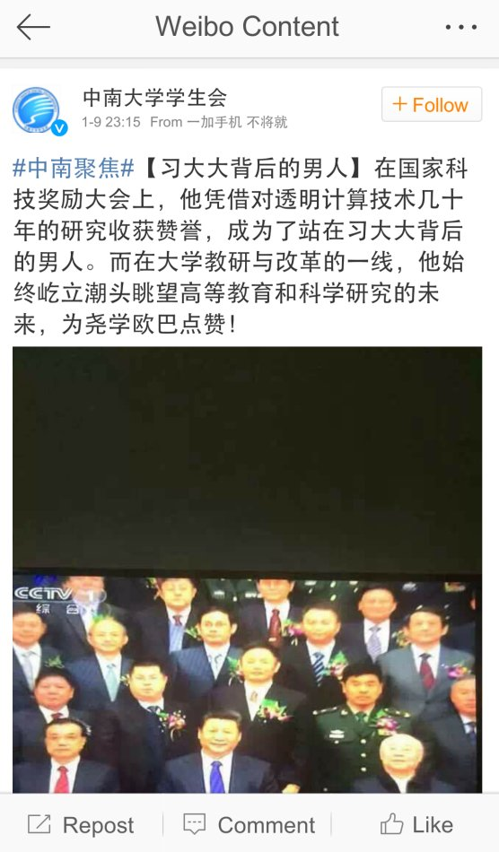
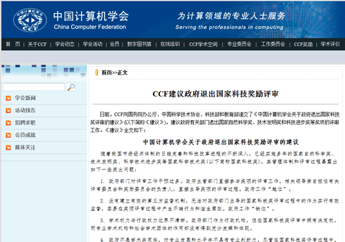
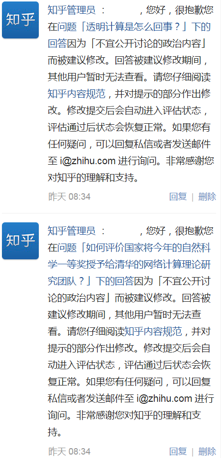

“透明计算”的丑闻发酵了快一个月，网友们也挖出不少料。今天发一篇转载，汇总一下“透明计算”和“张尧学”的相关报道以及网友评论。
先贴出张校长的尊容：

下面是他担任校长的中南大学对其吹捧的微博——号称是【习BB背后的男人】
（看到这个称号，淫荡的同学别想歪了）

《透明计算是什么 @ Solidot》（网页存档）
《透明计算的前世今生——缘起 @ 新语丝》（网页存档）
（编程随想注：这篇挖得挺深，懂 IT 技术的同学可以看看，基本上就明白这货是啥）
《如何评价张尧学以及他的透明计算 @ 知乎》
（编程随想注：知乎上揭发张尧学的内容都被河蟹了，这篇的镜像在“这里”。以下摘录的是——原透明计算实验室成员的爆料）
《国家自然科学一等奖惹争议 透明计算仍不透明 @ 搜狐新闻》（网页存档）
（编程随想注：以下是该报道的部分摘录）
《张校长能承受自然科学大奖之重吗？ @ WSJ/华尔街日报》（网页存档）
（编程随想注：以下是该报道的部分摘录）
《CCF 被指不认可透明计算理论 张尧学团队保持沉默 @ 光明网》（网页存档）
（编程随想注：“CCF”是“中国计算机学会”的缩写）
《暴风眼中的透明计算 @ 腾讯》（网页存档）
（编程随想注：以下是该报道的部分摘录）
《听专家评说：国家科学一等奖为何遭全国性学会抗议？ @ 微信公号赛先生》
（编程随想注：此文已经被微信屏蔽，【未找到】被屏蔽之前的网页存档 :( 以下是该报道的部分摘录）
《方舟子：不透明的“透明计算”——张尧学是如何骗取国家自然科学一等奖的 @ 新语丝》（网页存档）
（编程随想注：以下是该文的部分摘录）
《透明计算桌面系统被发现使用了开源代码 @ Solidot》（网页存档）
（编程随想注：以下是全文）
《Iordan Iordanov 谈“透明桌面” @ 果壳网》（网页存档）
（编程随想注：标题中这位“Iordan Iordanov”同学，就是被剽窃的对象。他开发的 bVNC 开源软件，被张校长的团队偷偷拿去用了）
转载了这么多文章，俺也来点评一下。
从上面介绍可以看出，这个所谓的“透明计算”，毫无含金量可言。而“国家自然科学奖一等奖”向来以“含金量”著称。已经有很多年因为没有合适的对象而空缺。但是今年居然颁给这么一个奇葩。没有足够的后台，这种事儿能运作成功吗？
遭到各方质疑后，真理部竟然还帮忙封杀质疑的声音。比如“财新网”1月17日发的一篇报道《“透明计算”获大奖 引发诸多争议》，很快就被删除。比如知乎网上批“透明计算”的内容，都被和谐掉了（后面还会引述网友的吐槽）。
后来又发生了更有戏剧性的事情：1月21日晚，中国计算机学会（CCF）在其官网发了一篇《关于政府退出国家科技奖励评审的建议》（下称《建议》），被视作 CCF 对此次颁奖的委婉反对。《建议》称，由于评审过程暴露的问题，导致国家级科技奖滋生腐败行为，建议政府部门退出国家科技奖评审工作。结果不到两天，这份《建议》就从官网上撤下（还好有人截图如下），原定的媒体沟通会也被取消。

你用膝盖想一下：后台不够硬，能做到上述这些效果吗？
一个月前，俺看到一篇新闻报道《中国去年专利申请占世界总数三分之一 @ BBC/英国广播公司》。这篇报道在国内也有多次转载，相信不少读者也看到了。俺正好借着这个“透明计算的丑闻”，给大伙儿提醒一下——所谓的“专利申请占世界总数三分之一”，这里面的水分可多啦！那些在高校做过研究生的同学，心里应该清楚——科研界的水分有多大。
写了此文之后又过了3年（2018），俺发了一篇《厉害国真的很厉害吗？——给小粉红们泼点冷水》，其中也聊到了天朝的专利问题。
xierch：
居然还有人给「透明计算」洗地洗得这么积极…
刚看到演示视频里蹦出的大段英文提示感觉不太妙，就搜了一下，居然真把他们盗用的源码（疑似）找到了…
https://www.v2ex.com/t/167200#r_1774984
义薄云天腹肌猫：
#张尧学否认抄袭开源项目
“我前天亲眼见你抄了外国人的代码，吊著打。”
张透明便涨红了脸，额上的青筋条条绽出，争辩道，“克隆代码不能算抄……克隆！……程序员的事，能算抄么？”
接连便是难懂的话，什么“GitHub”，什么“开源”之类，引得众人都哄笑起来：墙内外充满了快活的空气。
卢昌海：
一个人口大国出周小平那样的马屁精和张尧学那样的腐败者并不奇怪；
那样的腐败者是院士比较奇怪，获国家自然科学一等奖更加奇怪，但都还勉强能往偶然性上靠；
等到删贴等机制被动用起来维护那样的马屁精和腐败者时，偶然性这块最后的遮羞布也终于不保，赤条条露出了神奇国度里的必然性。
Eric Xu, PhD (徐宥)：
有人说云计算是炒概念，Google 产品的量级和一系列系统的创新，亚马逊的云服务等等都是现实的云计算带来的成果，这概念有实际成果。
透明计算到现在一行代码没见着一个应用没出现就能拿个袁隆平级别的奖，不得不说赵本山的忽悠技术后继有人了。
mtjs：
这种情况其实非常普遍，剧情可能如下：
陈少举：
透明计算桌面系统被发现使用了开源代码 http://www.solidot.org/story?threshold=0&mode=nested&sid=42908
//一开始我也以为这个透明计算就是瘦客户端（类似网吧无盘机），然后发现这玩意儿就是远程控制，QQ远程协助/VNC那种东西。。。
沙漠之舟：
最近中国都出了些什么东西，真是匪夷所思。
正能量周带鱼，高科技张透明，教育官袁贵人。。。
还有谁会觉得文革太荒唐呢？在中国没有太荒唐，只有更荒唐。
Eric Xu, PhD (徐宥)：
透明计算获得国家自然科学一等奖。我已无力吐槽。
按这个水平 ChromeOS 和 Android 可以从此包揽国家自然科学一等奖一百年了。。。
方舟子：
中南大学员工反映：中南大学校长张尧学获了国家自然科学一等奖，但成果单位是清华大学。
结果中南大学临时出台新规，署名外单位，但第一负责人为本单位职工的成果，也要奖励。100万到手。
这在中国是非常罕见的，几乎所有高校都只认成果署名单位。
说打南边来了个张校长，手里提着一包透明翔，打北边来了个方校长，腰里别着一段防火墙；
方校长想拿防火墙换张校长的透明翔，张校长不愿意拿手里的翔换方校长腰里的墙；
方校长急了：我挨骂上火又生病为啥还不能评个一等奖！
扔了防火墙上去就抹了张校长一脸翔。
张尧学，脸皮也真厚，自然一等岂是那么容易拿的？
你那个透明计算（TC），不要说自然一等奖，就是二等奖也够呛！
因为没有产业化，到目前为止，即使发明二等奖或科技进步二等奖也评不上。
Jerry Chou：
问：【几天前在知乎上揭穿张尧学，透明计算，国家自然科学一等奖的题目，全被知乎删光了，知乎的人能出来说一下么，还要脸不要了？？】
结果就是……如图：

光锥：
参加一个大数据的讨论会，正在演讲的是中国信息协会大数据分会的副会长刘鹏。
有人提问怎么看张尧学的透明计算？他笑一笑，说张是他的朋友，张是这个协会的会长，而且这事关系到国家层面，他不方便评价。
#呵呵 #态度已经很明显了
Yue Jin：
透明计算上了science了，呵呵，以后把science也封了吧，反动刊物，白专路线！
luxluYang：
我猜测上面的指定——今年的自然科学一等奖奖励信息安全领域方面的
（当然是中国特有的网络言论监控，否则论国际影响力无论如何也轮不到张尧学）
方校长的GFW太敏感被骂的太多，张尧学趁机推出他的透明计算，然后顺利获奖了？
经分析，这个就是习CORE好大喜功，喜欢所谓自主创新。
下面的人揣摩圣意，给找了个这么个东西，这下拍马屁拍到了马腿上。
Neo：
说起“透明计算”的笑话，体制内的专家们比我还坚定地认为体制内创新就是不可能的；
我们家老爷子就不说了，我至少认识半打四十年以上工龄的老人说过类似的话…
张做校长时启用学校宣传系统为自己营造“个人崇拜”。
“尧学欧巴”这样的称呼就是由官方反复提起才有使用的。
看到“网络路由器之父，打破冯诺依曼结构”，就感觉是大忽悠一个。
颠覆冯诺依曼结构~~
如果这样的话可以得图灵奖了吧？
张铭宸：
现在天天都用teamviewer远程连接家中电脑。
听到这种行为叫做颠覆冯诺依曼结构后，感觉瞬间高大上了，逼格瞬间提升了。XD
这东西居然能评上自然科学一等奖，清华的运作能力和脸皮厚度真是不一般。
电车痴汉：
越看透明计算的文章，越觉得透明计算是假的。在科技行业拿这么低含量的东西运作自然科学一等奖是不是也太不敬业了？
睡不醒的鹦鹉：
尼玛，尧学欧巴居然还是“网络路由器之父”！！！
透明计算被想出来或者写个论文都不奇怪，但是能获得国家自然学奖就很奇葩了。
这是一帮什么样的人在领导贵国学术。贵国学术圈比车展圈更乱。
张尧学有兄弟是从政的，张自己本身教育司司长出来的，不是科学家，是政客，这么想就好了。
只是造话题保热点方面有点过急，反而露了屁股。这人不站错队没多少问题，但应该上不了重权高位。
真是看不下去了，方校长的防火墙虽然被骂的狗血喷头，好歹是有东西在那的。
这透明计算是个什么忽悠的玩意，那什么文章，清华一个组的博士毕业论文都比那强，这个就比汉芯好那么一点儿。
尤其是看到清华的项目清华自己人都看不下去了由一群中南的非CS学生来维护也是醉了
方校长表示不服~
国内高校在计算机领域最大的工程实践，应该就是防火墙了吧~
给GFW都比这个靠谱。我为方校长鸣冤
骗子终于找到傻逼土豪了
俺博客上，和本文相关的帖子（需翻墙）：
《分析“制度性腐败”——为啥天朝的贪官屡禁不止？》
《二十年目睹之怪现状——中国学术界、科技界的“奇葩排行榜”》
《厉害国真的很厉害吗？——给小粉红们泼点冷水》
先贴出张校长的尊容：
下面是他担任校长的中南大学对其吹捧的微博——号称是【习BB背后的男人】
（看到这个称号，淫荡的同学别想歪了）
★“透明计算”到底是啥玩意儿？
《透明计算是什么 @ Solidot》（网页存档）
（编程随想注：以下是该报道的部分摘录）
透明计算是什么？根据中南大学新闻稿的描述，这不就是云计算吗？
新闻稿称：“张尧学团队设计出了全新概念的超级操作系统（或叫 TransOS）——允许 Unix、Linux 以及 Windows 等操作系统共存在一个终端。”
今天的亚马逊、微软 Google 的云计算服务平台不都提供了类似的功能？
新闻稿称，张尧学从1990年代开始构思透明计算。
查一下维基百科，早在1950年代云计算的概念就已经在大型机上诞生了。
“透明计算”这一并不新颖的概念获得国家自然科学奖一等奖，已经引起了许多争议。
《透明计算的前世今生——缘起 @ 新语丝》（网页存档）
（编程随想注：这篇挖得挺深，懂 IT 技术的同学可以看看，基本上就明白这货是啥）
《如何评价张尧学以及他的透明计算 @ 知乎》
（编程随想注：知乎上揭发张尧学的内容都被河蟹了，这篇的镜像在“这里”。以下摘录的是——原透明计算实验室成员的爆料）
作为前透明计算实验室的一员，来谈谈自己的想法好了。
首先，张尧学的透明计算在我学校是分为几个项目来做的，每个项目有一个小团队。包括 PC、Android 手机，平板的透明计算 OS，还有基于这个“理念”的移动医疗等应用项目。这里面 PC 端的 OS 就是我所在的小团队弄出来的。
对于大家黑的这些，我的总体看法是：黑的十分正确和漂亮。
其它项目团队怎么弄的我不清楚，PC 端基本都是我设计的，实现方案改过几次：
1. 最初和 Intel 一起改 PXE（这玩意是啥东西自行谷歌，网吧无盘就用它），想多台机器共用一个镜像，但更改的数据分别保存，搞了半天发现PXE跨不了局域网，也用不了无线，不能达到张尧学提出的要求，被 PASS 掉了。
2. 然后找了个开源的 iPXE，号称支持广域网和无线，自定义脚本等诸多功能，整了半天把原型整出来了，又发现丫对无线的支持烂成渣，只支持一两个 802.11g 的芯片组，尝试自行写无线驱动，还是不可行，因为要支持的无线网卡太多，只要有机器的网卡驱动没有，那这台机器就无法使用无线来加载透明计算系统，所以又被 PASS 掉。
3. 现在的方案（截止至我离开前），整了个开源的虚拟机（Virtualbox），虚拟机上运行透明计算系统，存储的操作系统放在服务器，用 iSCSI 传输，运行的真正操作系统（Windows 那些）上装了些自己写的程序做管理和监控。基本结构如下：
真实操作系统（Windows、Linux）
————————————————
虚拟机
————————————————
透明计算管理程序
————————————————
Linux
————————————————
机器硬件
我走之前，所在团队的工作基本上就是在定制 Linux 和改虚拟机。。。还为这套东西增强些功能。。
对于这整套东西，我的心里话其实是：没法用。真正使用的操作系统运行在一个虚拟机上，能快到哪去？更别说镜像还是放在服务器上用 iSCSI 协议来传输的。央视的新闻我看了，播到展示透明计算机器运行着 XP 系统的时候，我都笑傻了，为啥？Win7 及更新的操作系统是可以用，但基本慢成狗！如果再在那上面看个视频，能有10帧就谢天谢地了！首次启动 Win7 至少需要5分钟以上，如果你还处于10M以下的小水管的话，呵呵呵呵。。。最好别等了。
★“透明计算”到底有没有“获奖资格”？
《国家自然科学一等奖惹争议 透明计算仍不透明 @ 搜狐新闻》（网页存档）
（编程随想注：以下是该报道的部分摘录）
《光明日报》、《中国科学报》报道称，这一成果“从根本上突破了统治计算机领域六十余年的冯·诺依曼结构”，理论上“可防御所有病毒对计算机系统的攻击”，“在国际业界引起震动”。
但在一些业内人士看来，“透明计算”和现在流行的云计算相比没有太多突破。授予其一等奖，简直是“2000年以来中国学术界的最大笑话”。
在国内，清华大学和中国科学院的计算机学处于领先地位。南方周末记者采访了当中的两位知名学者，他们的评价基本相似。
一位学者认为，这个东西（透明计算）没有太强的学术贡献，也没有像袁隆平的杂交水稻那样，创造出特别高的实际价值。“如果稍微拔高一点儿，给一个科技进步二、三等奖也就算了，自然科学一等奖就太过分了。这会严重扭曲我们的评价标准，也让国际同行笑话。这次是真的玩儿大了。”
另一位学者的观点是，计算机这一行本来就偏应用，要想拿自然科学的一等奖，必须是一个很完备、系统的理论体系。“一般来说，像张院士这样位高权重的人，评奖的时候注点儿水，稍微抬高一点儿也很常见。这次确实有点儿用力过猛，兜不住了。”
《张校长能承受自然科学大奖之重吗？ @ WSJ/华尔街日报》（网页存档）
（编程随想注：以下是该报道的部分摘录）
就张校长在《科技日报》的回应里所提出的“透明计算”与“云计算”的四个不同点，我电话请教了一家知名计算机公司的首席技术官，他说，“云计算”构架包括了多种形式的终端设计，在终端虚拟化方面业界已经做了几十年了，张校长的设计只是其中一种。关于带宽和过程管理，业界各厂家也有很多不同做法。至于系统的安全性，每家云计算公司都必须提供自己的方案，各有所长。他认为，张校长团队的成果仅是“云计算”构架下的一种实现方式而已，并没有改变“云计算”构架，更不要说拓展“冯•诺依曼计算结构”了。
《CCF 被指不认可透明计算理论 张尧学团队保持沉默 @ 光明网》（网页存档）
（编程随想注：“CCF”是“中国计算机学会”的缩写）
“透明计算”是否具备创新性，以及是否具备产业化前景，在中国计算机学界引发争议，中南大学计算机所所长王国军对该课题的评价是，“从根本上突破了统治计算机领域60余年的冯·诺依曼结构，实现了流式计算”，然而，一些IT业内人士认为，“透明计算”仅仅是个理论，远远谈不上颠覆冯·诺依曼结构。
国家自然科学一等奖素以宁缺毋滥著称，1999年到2013年的15年间，有十年空缺。去年，以赵忠贤、陈仙辉、王楠林、闻海虎、方忠为代表的中国科学院物理研究所/北京凝聚态国家实验室(筹)和中国科学技术大学研究团队因为在“40K以上铁基高温超导体的发现及若干基本物理性质研究”方面的突出贡献而获奖。
1999年之前的国家自然科学一等奖的得奖项目，包括哥达巴赫猜想、人工合成牛胰岛素等至今仍影响广泛的课题。
《暴风眼中的透明计算 @ 腾讯》（网页存档）
（编程随想注：以下是该报道的部分摘录）
在中央级媒体延续一贯的宣传手法，高歌“统治现代计算机60年的冯·诺依曼体系被打破，中国科研力量即将引领未来”的同一时间，几乎所有的社交平台上，张尧学团队的“网络计算的模式及基础理论研究”（即透明计算）都遭到了大量网民的质疑。
率先引发网友关注的是中南大学的官方微博。中南官微在祝贺张尧学获奖的一条微博中，将张定义为“路由器之父”，随后这一说法遭到了大量普通网友挑战，继而演化为对透明计算本身价值的质疑。
随后一批 IT 业内人士也参与到了对“透明计算”的批判中，随着学术打假人方舟子高调关注此事，这一学术界风波彻底发酵成为一个社会事件。几乎所有的质疑声都在细究一点——透明计算并不具有独创性和创新性，即便不被考虑独创与创新性，这一技术也距离商业化甚远。
★“透明计算”到底有没有“国际影响力”？
《听专家评说：国家科学一等奖为何遭全国性学会抗议？ @ 微信公号赛先生》
（编程随想注：此文已经被微信屏蔽，【未找到】被屏蔽之前的网页存档 :( 以下是该报道的部分摘录）
而在一些官方报道中，被中南大学称为“在国际上反响强烈”的张尧学团队论文《TransOS: A Transparent Computing-based Operating System for the Cloud》发表于2012年，经查该文总引用数仅为6次，其中4次是中南大学信息工程学院自己引用，其余2次皆为中国其他学者引用，看不到一丝“国际”的影子。
即便是在报奖材料中，张尧学团队自述其论文引用情况也仅是“20篇主要论文SCI他引120余次”，说明其SCI论文篇平均被引仅6次。
相比之下， 2003年颁发的自然科学一等奖“澄江动物群与寒武纪大爆发”项目共发表论文90多篇，其中在国际顶级综合性科学期刊《科学》和《自然》上发表14篇，SCI收录37篇，70篇被SCI引用842次，出版专著9部。主要代表性文章的总被引和WOS被引数多数分别在100和50以上。
2006年国家自然科学一等奖“介电体超晶格材料的设计、制备、性能和应用”的主要论文中，有3篇发表在《科学》上，1篇发表在《先进材料》上，6篇发表在《物理评论快报》上，55篇主要论文已被SCI他引639篇次，被13篇综述文章成段引用。
而2013年的国家自然科学一等奖“40K以上铁基高温超导体的发现及若干基本物理性质研究”，其8篇代表性论文SCI他引3801次，最高单篇他引823次，20 篇主要论文SCI他引5145 次。
《方舟子：不透明的“透明计算”——张尧学是如何骗取国家自然科学一等奖的 @ 新语丝》（网页存档）
（编程随想注：以下是该文的部分摘录）
再神的人才，再神的科研成果，也是要通过论文发表体现出来的。在报奖材料中，张尧学列举了能体现其获奖成果的八篇代表性论文专著：
第一篇论文发表在2006年9月在武汉召开的一次学术会议上（Third International Conference, UIC 2006 ），会议组织者是在新语丝挂号的金海。
这种会议的主要目的是为中国科研人员提供出钱发表SCI论文的机会，几乎没有含金量，被称为野鸡会议。张尧学的这篇论文发表了9年，共被引用45次（据google scholar，下同），绝大部分是张尧学自引和中国人引用，国外引用只有3次，分别是日本、韩国、德国人引用。
第二篇论文发表在IEEE的低端学术会议上，在IEEE的1578种IT会议中，该会议的排名1362（http://arnetminer.org/page/conference-rank/html/All-in-one.html）。
这篇论文是张尧学迄今发表的所有论文中引用次数最多的：46次，然而几乎全都是张尧学本人自引和中国人引用，仅被国外引用了两次，这两次都不是英文文献。也就是说，张尧学这篇引用次数最多的论文，在作为科技界国际语言的英语文献上被国外学者引用的次数是零。
第三篇是张尧学发过的档次最高的论文，但是是1988年他在日本留学做的博士学位论文工作，有三个日本共同作者。张尧学将其博士学位论文也列入报奖材料中，简直是莫名其妙，因为第一，其博士研究内容与其获奖内容没有关系；第二，这项工作的知识产权属于日本东北大学，而中国国家自然科学奖只授予在中国做的工作。难道张尧学想把中国国家自然科学一等奖让其日本导师分享？张尧学将其1988年日本留学的论文也拉来凑数，可能是因为他自己也知道自己拿得出手的论文太少。
第四篇是1999年一篇人工智能方面的论文，也与获奖内容无关。该论文的引用次数是16次。发表该论文的期刊已在2001年停刊。
后面的四篇作者中都没有张尧学，也都不属于透明计算的内容。最搞笑的是第五篇，它其实是清华大学出版社在2001年4月出版的一本教材的一个章节（第五章“非乘积解排队网络和近似算法”），张尧学为了把它伪装成期刊论文，创造性地把书的出版年份写成“2001年卷”。而且这个章节根本就没有教材作者的原创内容，都是引用国外学者的，这些国外学者是不是也能跟张尧学分享奖金？
★“透明计算”到底有没有“盗用开源项目”？
《透明计算桌面系统被发现使用了开源代码 @ Solidot》（网页存档）
（编程随想注：以下是全文）
备受争议的透明计算被发现借用了开源远程桌面项目的代码。获得国家自然科学奖一等奖的透明计算项目公开了原型桌面系统和手机终端远程应用实例的演示视频，一位新语丝的用户仔细观看了视频，Google了视频中的一段英文代码，结果在 GitHub 上找到了这段源代码的出处——一个个人开源桌面客户端项目 bVNC。
bVNC 项目作者在被中国用户告知后发表了“获奖感言”，指出他的项目采用的是 GPLv3 许可证，如果张尧学的团队要推广他们的项目，他们必须公开源代码。
《Iordan Iordanov 谈“透明桌面” @ 果壳网》（网页存档）
（编程随想注：标题中这位“Iordan Iordanov”同学，就是被剽窃的对象。他开发的 bVNC 开源软件，被张校长的团队偷偷拿去用了）
★俺的点评
转载了这么多文章，俺也来点评一下。
◇从“大范围删贴”看“透明计算”的后台
从上面介绍可以看出，这个所谓的“透明计算”，毫无含金量可言。而“国家自然科学奖一等奖”向来以“含金量”著称。已经有很多年因为没有合适的对象而空缺。但是今年居然颁给这么一个奇葩。没有足够的后台，这种事儿能运作成功吗？
遭到各方质疑后，真理部竟然还帮忙封杀质疑的声音。比如“财新网”1月17日发的一篇报道《“透明计算”获大奖 引发诸多争议》，很快就被删除。比如知乎网上批“透明计算”的内容，都被和谐掉了（后面还会引述网友的吐槽）。
后来又发生了更有戏剧性的事情：1月21日晚，中国计算机学会（CCF）在其官网发了一篇《关于政府退出国家科技奖励评审的建议》（下称《建议》），被视作 CCF 对此次颁奖的委婉反对。《建议》称，由于评审过程暴露的问题，导致国家级科技奖滋生腐败行为，建议政府部门退出国家科技奖评审工作。结果不到两天，这份《建议》就从官网上撤下（还好有人截图如下），原定的媒体沟通会也被取消。
◇关于“专利”
一个月前，俺看到一篇新闻报道《中国去年专利申请占世界总数三分之一 @ BBC/英国广播公司》。这篇报道在国内也有多次转载，相信不少读者也看到了。俺正好借着这个“透明计算的丑闻”，给大伙儿提醒一下——所谓的“专利申请占世界总数三分之一”，这里面的水分可多啦！那些在高校做过研究生的同学，心里应该清楚——科研界的水分有多大。
写了此文之后又过了3年（2018），俺发了一篇《厉害国真的很厉害吗？——给小粉红们泼点冷水》，其中也聊到了天朝的专利问题。
★汇总网友的各种吐槽
xierch：
居然还有人给「透明计算」洗地洗得这么积极…
刚看到演示视频里蹦出的大段英文提示感觉不太妙，就搜了一下，居然真把他们盗用的源码（疑似）找到了…
https://www.v2ex.com/t/167200#r_1774984
义薄云天腹肌猫：
#张尧学否认抄袭开源项目
“我前天亲眼见你抄了外国人的代码，吊著打。”
张透明便涨红了脸，额上的青筋条条绽出，争辩道，“克隆代码不能算抄……克隆！……程序员的事，能算抄么？”
接连便是难懂的话，什么“GitHub”，什么“开源”之类，引得众人都哄笑起来：墙内外充满了快活的空气。
卢昌海：
一个人口大国出周小平那样的马屁精和张尧学那样的腐败者并不奇怪；
那样的腐败者是院士比较奇怪，获国家自然科学一等奖更加奇怪，但都还勉强能往偶然性上靠；
等到删贴等机制被动用起来维护那样的马屁精和腐败者时，偶然性这块最后的遮羞布也终于不保，赤条条露出了神奇国度里的必然性。
Eric Xu, PhD (徐宥)：
有人说云计算是炒概念，Google 产品的量级和一系列系统的创新，亚马逊的云服务等等都是现实的云计算带来的成果，这概念有实际成果。
透明计算到现在一行代码没见着一个应用没出现就能拿个袁隆平级别的奖，不得不说赵本山的忽悠技术后继有人了。
mtjs：
这种情况其实非常普遍，剧情可能如下：
争取到项目后，院长自己当然没时间做，就安排给教授；
教授找了几篇国外最新发表的论文，提了个想法，要求研究生实现；
研究生在与喜欢Hacker的同学闲聊时意外了解到这位同学有类似代码可用，于是用一顿饭换来了代码。
别人的东西，看不大懂是正常的，再找Hacker同学请教得请吃饭吧，教授没给经费，自己搞腰包不值得。
研究生粗略改改，也算实现了基本功能。
教授看了功能演示，看着打游戏累得眼圈发黑的研究生，虽然不是十分满意，但想想研究生水平一般，能做到这样已经超出预期了，再改进还得要自己亲自上手，于是作罢。
教授安排研究生选几个功能模块，加进几个高大上的名词进去，写成了论文，找关系发表了。
论文中虽然教授的名字列在了前面，但研究生也没亏，凭他自己发表不了论文，
研究生名字虽没列在前面，但毕竟解决论文毕业论文问题，能毕业就行了。
教授把研究生的毕业论文润色一番，改成了项目报告。
院长听汇报后对几个吸引眼球的名词很感兴趣，认为贴近当前热点需求，于是四处活动评奖。
国家大奖，当然要院长挂名了！谁知出了这样的事。只能认倒霉。
研究生不知道Hacker同学给的是开源代码，原以为是同学自己写的代码，还为此崇拜了他好久。
教授太忙，没时间核实代码是不是原创，研究生的论文里又没写自己引用了别人的代码。
院长真的不知情。这么低级的工作，他怎么管得过来？
当然啦，国家给了这么多钱，成果当然！必须！理所当然！是拥有完全知识产权的！！！
陈少举：
透明计算桌面系统被发现使用了开源代码 http://www.solidot.org/story?threshold=0&mode=nested&sid=42908
//一开始我也以为这个透明计算就是瘦客户端（类似网吧无盘机），然后发现这玩意儿就是远程控制，QQ远程协助/VNC那种东西。。。
沙漠之舟：
最近中国都出了些什么东西，真是匪夷所思。
正能量周带鱼，高科技张透明，教育官袁贵人。。。
还有谁会觉得文革太荒唐呢？在中国没有太荒唐，只有更荒唐。
Eric Xu, PhD (徐宥)：
透明计算获得国家自然科学一等奖。我已无力吐槽。
按这个水平 ChromeOS 和 Android 可以从此包揽国家自然科学一等奖一百年了。。。
方舟子：
中南大学员工反映：中南大学校长张尧学获了国家自然科学一等奖，但成果单位是清华大学。
结果中南大学临时出台新规，署名外单位，但第一负责人为本单位职工的成果，也要奖励。100万到手。
这在中国是非常罕见的，几乎所有高校都只认成果署名单位。
说打南边来了个张校长，手里提着一包透明翔，打北边来了个方校长，腰里别着一段防火墙；
方校长想拿防火墙换张校长的透明翔，张校长不愿意拿手里的翔换方校长腰里的墙；
方校长急了：我挨骂上火又生病为啥还不能评个一等奖！
扔了防火墙上去就抹了张校长一脸翔。
张尧学，脸皮也真厚，自然一等岂是那么容易拿的？
你那个透明计算（TC），不要说自然一等奖，就是二等奖也够呛！
因为没有产业化，到目前为止，即使发明二等奖或科技进步二等奖也评不上。
Jerry Chou：
问：【几天前在知乎上揭穿张尧学，透明计算，国家自然科学一等奖的题目，全被知乎删光了，知乎的人能出来说一下么，还要脸不要了？？】
结果就是……如图：
光锥：
参加一个大数据的讨论会，正在演讲的是中国信息协会大数据分会的副会长刘鹏。
有人提问怎么看张尧学的透明计算？他笑一笑，说张是他的朋友，张是这个协会的会长，而且这事关系到国家层面，他不方便评价。
#呵呵 #态度已经很明显了
Yue Jin：
透明计算上了science了，呵呵，以后把science也封了吧，反动刊物，白专路线！
luxluYang：
我猜测上面的指定——今年的自然科学一等奖奖励信息安全领域方面的
（当然是中国特有的网络言论监控，否则论国际影响力无论如何也轮不到张尧学）
方校长的GFW太敏感被骂的太多，张尧学趁机推出他的透明计算，然后顺利获奖了？
经分析，这个就是习CORE好大喜功，喜欢所谓自主创新。
下面的人揣摩圣意，给找了个这么个东西，这下拍马屁拍到了马腿上。
Neo：
说起“透明计算”的笑话，体制内的专家们比我还坚定地认为体制内创新就是不可能的；
我们家老爷子就不说了，我至少认识半打四十年以上工龄的老人说过类似的话…
张做校长时启用学校宣传系统为自己营造“个人崇拜”。
“尧学欧巴”这样的称呼就是由官方反复提起才有使用的。
看到“网络路由器之父，打破冯诺依曼结构”，就感觉是大忽悠一个。
颠覆冯诺依曼结构~~
如果这样的话可以得图灵奖了吧？
张铭宸：
现在天天都用teamviewer远程连接家中电脑。
听到这种行为叫做颠覆冯诺依曼结构后，感觉瞬间高大上了，逼格瞬间提升了。XD
这东西居然能评上自然科学一等奖，清华的运作能力和脸皮厚度真是不一般。
电车痴汉：
越看透明计算的文章，越觉得透明计算是假的。在科技行业拿这么低含量的东西运作自然科学一等奖是不是也太不敬业了？
睡不醒的鹦鹉：
尼玛，尧学欧巴居然还是“网络路由器之父”！！！
透明计算被想出来或者写个论文都不奇怪，但是能获得国家自然学奖就很奇葩了。
这是一帮什么样的人在领导贵国学术。贵国学术圈比车展圈更乱。
张尧学有兄弟是从政的，张自己本身教育司司长出来的，不是科学家，是政客，这么想就好了。
只是造话题保热点方面有点过急，反而露了屁股。这人不站错队没多少问题，但应该上不了重权高位。
真是看不下去了，方校长的防火墙虽然被骂的狗血喷头，好歹是有东西在那的。
这透明计算是个什么忽悠的玩意，那什么文章，清华一个组的博士毕业论文都比那强，这个就比汉芯好那么一点儿。
尤其是看到清华的项目清华自己人都看不下去了由一群中南的非CS学生来维护也是醉了
方校长表示不服~
国内高校在计算机领域最大的工程实践，应该就是防火墙了吧~
给GFW都比这个靠谱。我为方校长鸣冤
骗子终于找到傻逼土豪了
俺博客上，和本文相关的帖子（需翻墙）：
《分析“制度性腐败”——为啥天朝的贪官屡禁不止？》
《二十年目睹之怪现状——中国学术界、科技界的“奇葩排行榜”》
《厉害国真的很厉害吗？——给小粉红们泼点冷水》
版权声明
本博客所有的原创文章，作者皆保留版权。转载必须包含本声明，保持本文完整，并以超链接形式注明作者编程随想和本文原始地址：
https://program-think.blogspot.com/2015/02/weekly-share-80.html
本博客所有的原创文章，作者皆保留版权。转载必须包含本声明，保持本文完整，并以超链接形式注明作者编程随想和本文原始地址：
https://program-think.blogspot.com/2015/02/weekly-share-80.html